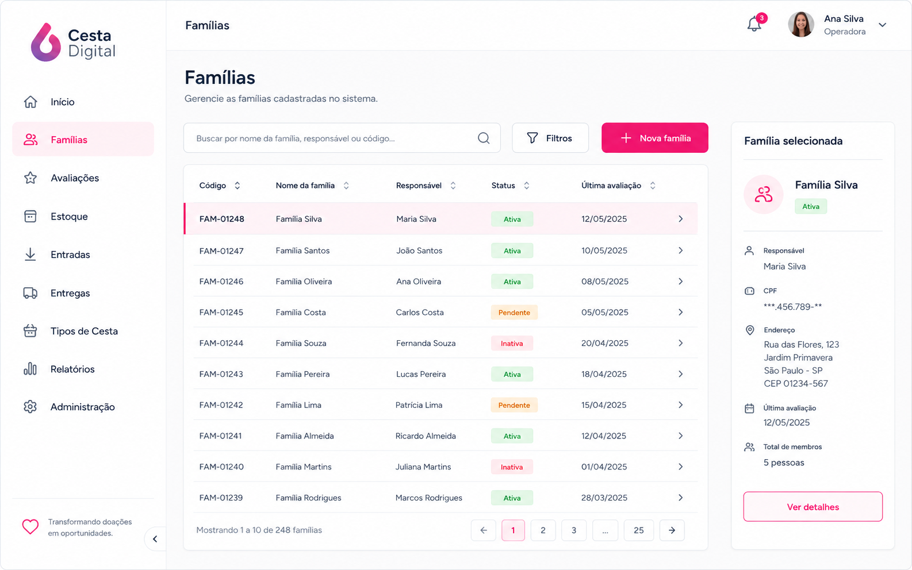
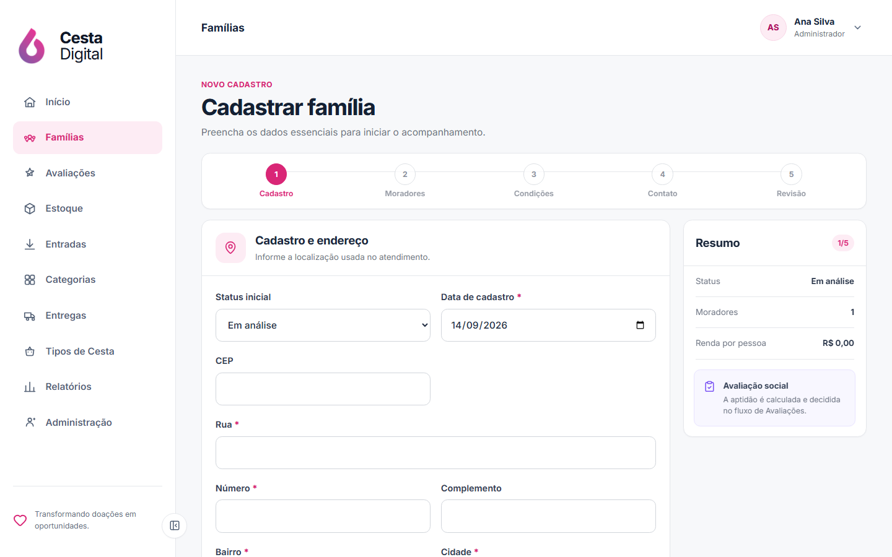
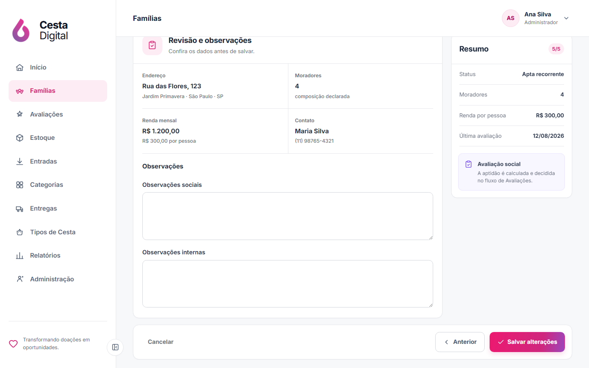
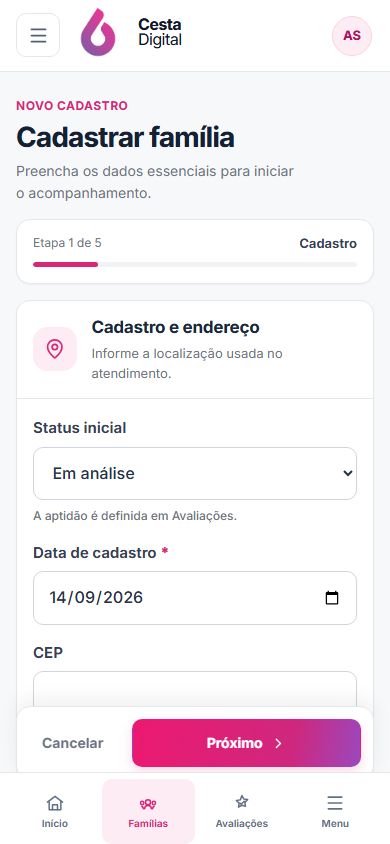
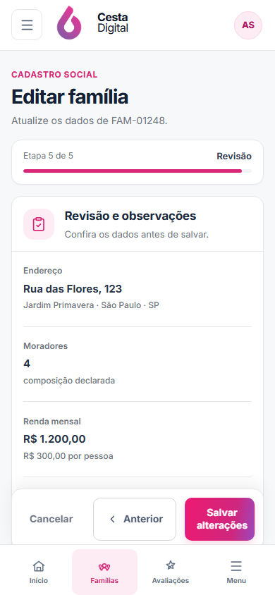

V2-17 · Cadastro e edição de famílias
Formulário social em etapas, alinhado à tela de Famílias e ao fluxo real de avaliação.
Aguardando aprovação visualReferência × cadastro desktop
Clique em qualquer imagem para abrir a captura original em uma nova aba.


Revisão e adaptação mobile
Desktop mantém menu lateral e resumo contextual; mobile usa progresso compacto e ações acima da navegação inferior.



Avaliação preservada
A família entra em análise; aptidão e reavaliação continuam pertencendo ao fluxo de Avaliações.
Sem dados cenográficos
Não há placeholders de exemplo, rascunho persistente ou campos que o backend não grave.
Contrato preservado
Criação e edição mantêm rotas, RBAC, payload, contatos existentes e datas de avaliação.